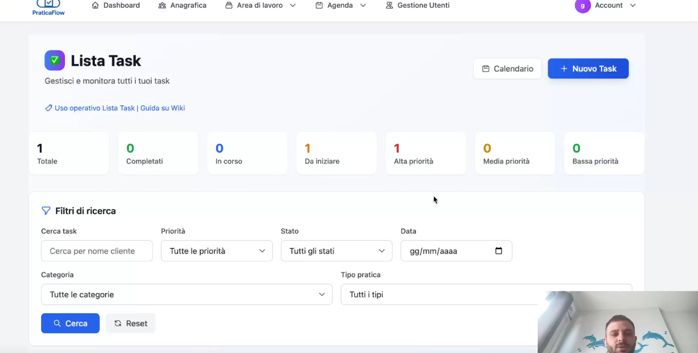

Lista Task in PraticaFlow: attività sempre chiare e tracciate

La Lista Task di PraticaFlow è una todo list smart collegata alle pratiche e ai clienti. Niente più post-it o note sparse: ogni attività è tracciata, assegnata e con uno stato chiaro.
Con priorità, filtri ed esportazione, il lavoro di team diventa più organizzato e nessuna attività resta indietro.
Funzionalità della Lista Task
- Stati: da iniziare, in corso, completato.
- Priorità: alta, media, bassa.
- Collegamento diretto a pratiche e clienti.
- Filtri per stato, pratica, cliente, data.
- Export CSV per avere il report delle attività.
Come usarla al meglio
- Inserisci un task ogni volta che c’è un’attività da svolgere.
- Associa la priorità e lo stato per tenerlo sotto controllo.
- Collega il task alla pratica per avere contesto completo.
- Usa i filtri e l’export per monitorare l’avanzamento.